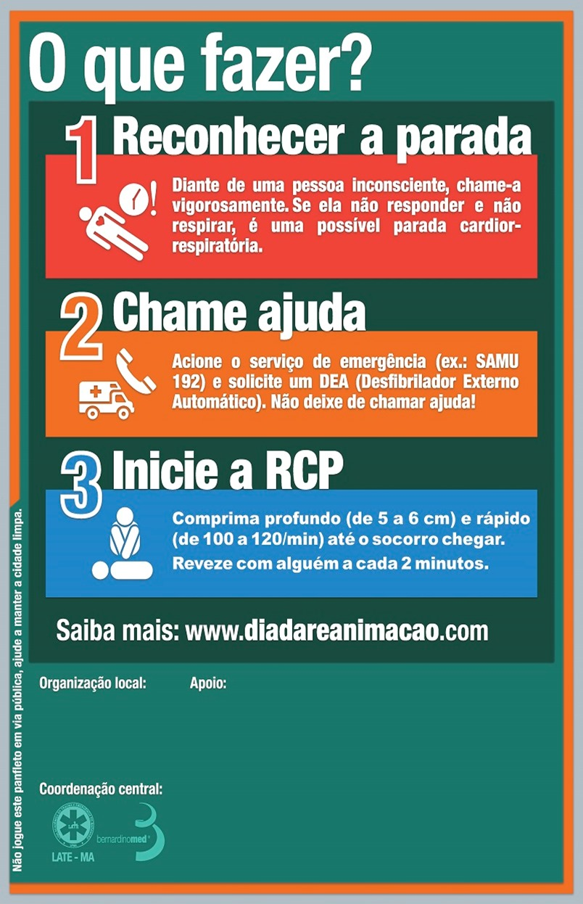
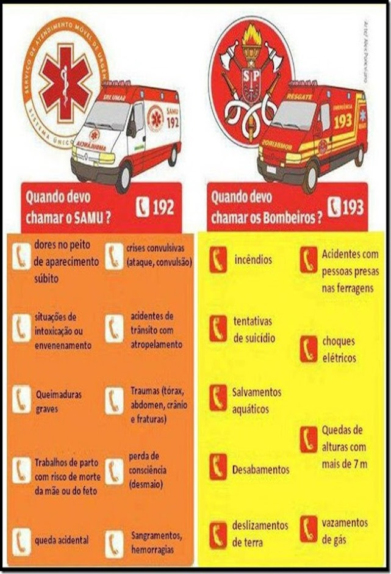

O QUE É?
É toda ação imediata e breve prestada a uma pessoa que sofreu acidente ou mal súbito, até a chegada do atendimento pré hospitalar para encaminhamento até uma unidade hospitalar.
Quem pode executar os primeiros socorros?
Qualquer pessoa devidamente treinada ou orientada para realizar as ações necessárias ,a fim de não piorar a situação da vitima.
O que é ?
É uma reação do organism o de tentar expulsar algum alimento ou objeto que esteja preso na laringe bloqueando a passage do ar para os pulmões.O engasgo é considerado uma emergência e se não for tratado a tempo pode levar a pessoa a ter uma perda de consciência e em casos graves a morte por asfixia.
Como agir em caso de engasgamento
O que é
Conhecida popularmente como parada cardíaca, é quando o coração para de forma repentina ou de forma insuficiente, e se não Forem tomadas providencias em tempo vai prejudicar também a respiração,podendo levar a pessoa a ter sequelas ou até mesmo a óbito. Identificado que a vitimas esta em parada cardiorrespiratória deve se iniciar de imediato a R.C.P (reanimação cardiopulmonar).
A primeira providencia a se tomar quando se identifica uma PCR (parada cardiorrespiratória) é pedir por ajuda.
Saber reconhecer a diferença entre os serviços pode fazer a diferença no atendimento a emergências.
